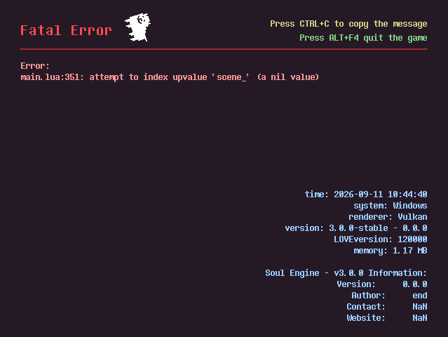
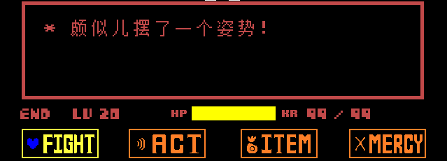

初始化配置
在这里可以设置作者信息、游戏图标、初始场景等。
版本与信息¶
打开目录下的 conf.lua ，这是用来填写信息的文件。
在大多数情况下，只需要看 love.conf(t) 函数之前的内容即可。
_VER = "3.0.0-stable"
_RELEASED = false
_INFO = {
TITLE = "Soul Engine - v3.0.0",
VERSION = "0.0.0", -- THIS IS YOUR GAME'S VERSION, the "_VER" upon means the engine's version.
AUTHOR = "end",
CONTACT = "NaN",
WEBSITE = "NaN",
}
LOGICAL_WIDTH, LOGICAL_HEIGHT = 640, 480
CANVAS_WIDTH, CANVAS_HEIGHT = 640, 480
SCREEN_SCALE = "integer" -- 游戏画布的缩放方式
FILL_SCREEN = true -- 遗留开关，只在 SCREEN_SCALE 为 nil 时生效
USE_ERRHANDLER = true
下面对主要变量进行介绍：
_VER引擎版本号。可以修改成自己的游戏版本号，这个并不做强制要求，因为不展示引擎版本号也无所谓。后面有一个真正的游戏版本。_RELEASED是否为已发布版本。在打包导出之前修改为true。（虽然我认为大部分人都会忘掉）_INFO信息表，这里的信息会展示在报错界面与窗口标题中。TITLE窗口标题。Android不支持查看。VERSION游戏版本。这个是你游戏当前的版本，比如如果发布了，可以给一个1.0.0等标签。AUTHOR游戏作者。（将会在报错界面展示）CONTACT联系方式。（将会在报错界面展示）WEBSITE游戏网站，可以是发布页或者一个能反馈的地址。（将会在报错界面展示）
LOGICAL_WIDTH / HEIGHT游戏窗口的大小，默认(640, 480)，第二个推荐的尺寸是(960, 540)，此大小为带边框的情况。CANVAS_WIDTH / HEIGHT游戏画布的大小，默认(640, 480)，不推荐修改尺寸，保持默认即可。FILL_SCREEN是否让游戏随着全屏放大而按比例放大自身。 现在只是遗留开关：只有当SCREEN_SCALE没写（nil）时才生效，新项目请直接改下面这个。SCREEN_SCALE游戏画布的缩放方式，默认"integer"。画布始终居中，边框会跟着画布一起缩放，所以窗框和游戏画面不会错位。"integer"只按整数倍放大，像素完美。窗口比画布大 1.5 倍时用 1 倍，比 4 倍大时用 4 倍。"auto"尽量铺满窗口，允许小数倍。- 填数字则固定倍数，填
false保持 1:1 不缩放。 - 运行中可以用
SetScreenScale(mode)切换、GetScreenScale()读取当前倍数。
USE_ERRHANDLER是否启用自定义报错界面，默认为true，如果报错了会进入神烦狗界面。若关闭则保持默认报错样式。
自定义报错界面：

游戏初始化¶
和 conf.lua 同目录下，有另一个配置文件： conf_pure.lua ，这个文件负责游戏的各种初始化内容。
初始化配置其实有两份，而且它们是叠加的：
| 文件 | 作用 |
|---|---|
根目录 conf_pure.lua |
引擎默认值，会把所有变量铺好 |
Game/conf_pure.lua |
你游戏的覆盖，后执行，同名的变量会盖掉引擎那份 |
所以你只想改哪几行，就往 Game/conf_pure.lua 里写那几行就行，没写的自动沿用引擎默认值。引擎那份被你改坏了也不至于卡死——Game 区那份执行出错时，引擎会整体回滚到默认值并打印一句 [Conf] WARNING 。按 F2 会重新跑这两份配置。
按功能，我们把这个文件的内容分成四个部分：初始化、控制器、网络、内存管理。
初始化¶
Global.SetVariable("FirstRoom", "Battle.scene_battle_init")
Global.SetVariable("MainColor", {1, 1, 1})
Global.SetVariable("EnableFriskDance", false)
Global.SetVariable("Language", "zh_CN")
Global.SetVariable("UseRealTime(dt)", false)
Global.SetVariable("ScreenShaders", {})
Global.SetVariable("FPS", 60)
Global.SetVariable("F2Room", "scene_logo")
Global.SetVariable("Volume", {
Master = 1,
Music = 1,
Sounds = 1
})
FirstRoom初始场景。启动游戏后的第一个场景为本场景。引擎默认给的是Battle.scene_battle_init；注意同一个变量在文件里被写了好几次，最后一次生效，改成自己的场景时记得写在最下面。MainColor主色调。若想制作Underfell等AU，可以将此值设置为粉红色，绝大部分元素都会遵循这个颜色。EnableFriskDance在Overworld中启用屠杀之舞功能，引擎默认关闭（false）。Language语言文件，目前使用zh_CN（简体中文）。UseRealTime(dt)使用现实时间。包括玩家移动在内均不会因卡顿造成影响。ScreenShaders屏幕特效。FPS帧数。F2Room按下F2按键后会去的场景（各热键的作用见 辅助开发 → 引擎热键 ）。Volume音量大小。
设置了 Underfell 主色调的战斗场景：

输入控制¶
Global.SetVariable("ControllerSimulation", {
virtualKeyboard = false,
joystick = false,
})
Global.SetVariable("ControllerDeadzone", 0.15)
ControllerSimulation在未发布阶段进行输入测试模拟，可以模拟摇杆和虚拟触屏。ControllerDeadzone手柄的死区多大，如果这个值太小玩家可能稍微碰摇杆就开始感应。
完整的输入接口（逻辑键位表、 Controller.GetState 等）见 输入与控制器 。
网络¶
Global.SetVariable("GamejoltID", nil)
Global.SetVariable("GamejoltPK", nil)
Global.SetVariable("DiscordAppID", "1342517648348680202")
GamejoltID / PK游戏的ID与private key，详情见 网络开发 → GameJolt 。DiscordAppID用来展示Discord Rich Presence的app，可以自创一个新的，详情见 网络开发 → Discord RPC 。
内存安全¶
风险
关闭这部分功能可能导致游戏内存溢出。
请再三考虑是否关闭。
Global.SetVariable("SE_MEMORY_SAFETY", true) -- DANGEROUS
Global.SetVariable("OPT_COUNT_SPRITES", 2000)
Global.SetVariable("OPT_COUNT_TYPERS", 300)
Global.SetVariable("OPT_MEMORY_MAXSIZE", 0.8)
Global.SetVariable("OPT_LRU_SPRITES", {false, 180})
Guard = ImportFile("Engine.MemorySafety")
SE_MEMORY_SAFETY此内容用来保护游戏内存溢出情况发生，若不加防护可能导致电脑运行内存被占满后崩溃。可以关闭，但后果自行承担。OPT_COUNT_SPRITES最大允许同时存在的图片，默认2000，在2000时开始发出警告，4000驳回创建操作。OPT_COUNT_TYPERS最大允许同时300个打字机在场。OPT_LRU_SPRITES贴着图缓存回收，默认{false, 180}，也就是关着：第二项的180秒是判定时长，但第一项为false时不会触发回收，贴图进了缓存就一直留着。想打开就改成{true, 180}—— 某张图超过180秒没被用到就回收，下次用到再重新读盘创建。
Guard 是执行库，获取如上的这些设置后，将会在贴图库/打字机库中进行操作干涉。